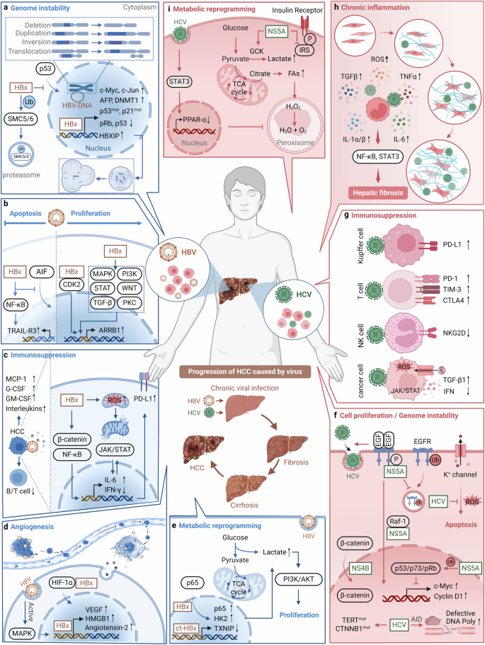

Symptoms of Oncogenic Virus Infections

Oncogenic viruses can cause a wide range of symptoms, depending on the specific virus, the organ system affected, and whether cancer has developed. Many infections are asymptomatic in the early stages. Here are some common symptoms and signs associated with major oncogenic viruses:
- General Symptoms: Fever, fatigue, swollen lymph nodes, and malaise may occur during the initial infection.
- HPV (Human Papillomavirus): Genital warts, respiratory papillomatosis, and, in advanced cases, symptoms related to cervical, anal, or oropharyngeal cancer (e.g., abnormal bleeding, pain, difficulty swallowing).
- HBV/HCV (Hepatitis B and C Viruses): Jaundice, abdominal pain, dark urine, fatigue, and, in chronic cases, symptoms of liver cirrhosis or liver cancer (e.g., weight loss, abdominal swelling).
- EBV (Epstein-Barr Virus): Sore throat, fever, swollen lymph nodes, and, in rare cases, symptoms of lymphoma or nasopharyngeal carcinoma (e.g., persistent lumps, nasal obstruction).
- HTLV-1 (Human T-cell Leukemia Virus type 1): Most infections are asymptomatic, but some may develop adult T-cell leukemia/lymphoma (ATLL) with symptoms like enlarged lymph nodes, skin lesions, and neurological problems.
- KSHV (Kaposi's Sarcoma-associated Herpesvirus): Purple or brown skin lesions, swelling, and, in severe cases, symptoms related to lymphoma or multicentric Castleman disease.
It is important to note that many people infected with oncogenic viruses do not develop symptoms until cancer or other complications arise. Regular screening and early detection are crucial for effective management and treatment.